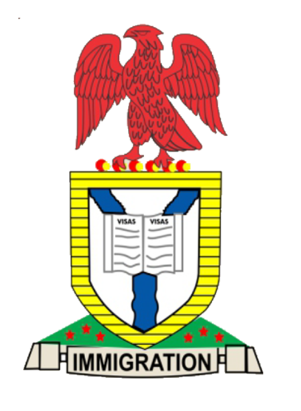

Nigeria Immigration Service
e-Visa Verification
Verify an e-Visa
Scan the certificate QR code, or enter the Visa number, or the passport/ document number.
Umar Musa Yar'Adua Express Way, Airport Road, Sauka, Abuja, FCT Nigeria © 2026 Nigeria Immigration Service. All rights reserved